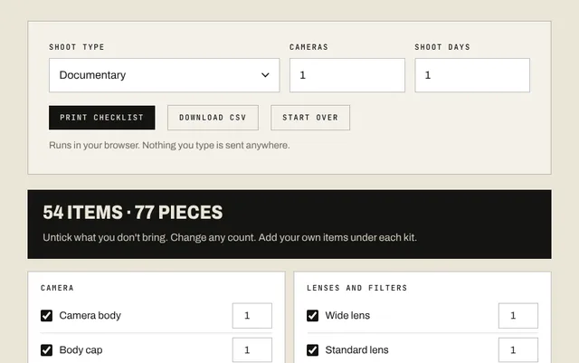
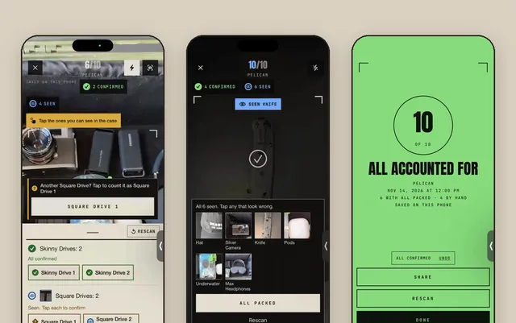
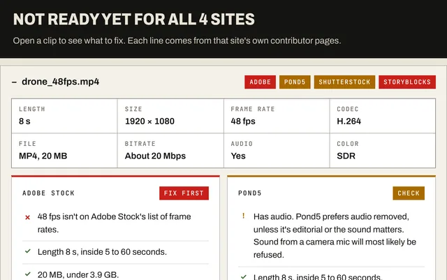
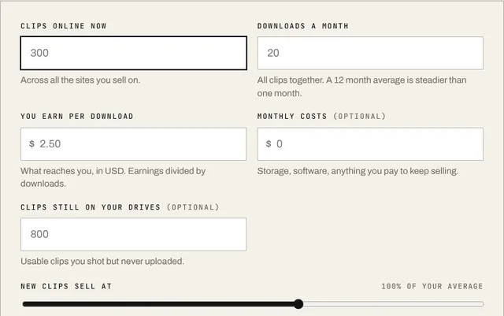
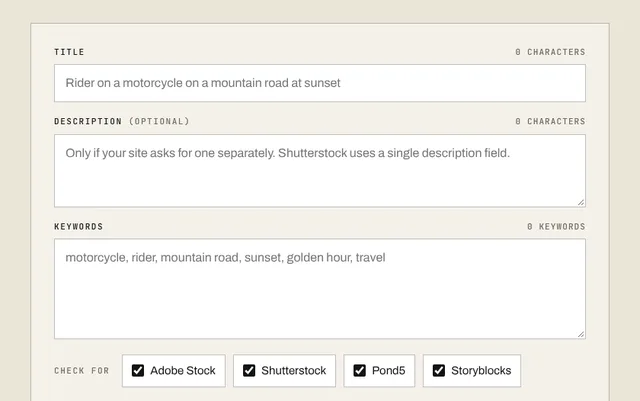
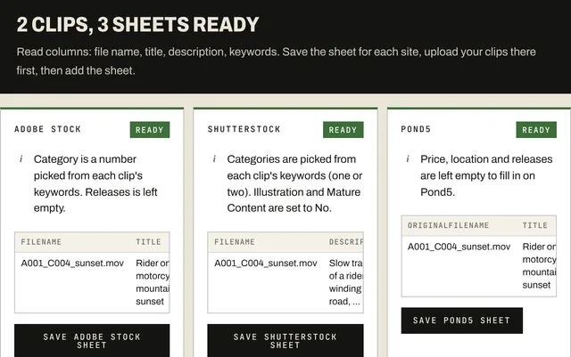

DEADWORK · Guides
Guides for people who shoot.
Practical guides and free tools from the team behind our apps. Pack, wrap and track your gear. Then turn the footage into stock clips that sell.
01
Loadout
Camera gear checklists and the habits that stop gear going missing. Loadout checks the open case with your iPhone. About Loadout →
Start here 2
 For filmmakers · 7 minThe Ultimate Camera Gear Checklist for FilmmakersEvery item a film or video shoot needs, kit by kit. Check it when you pack, and check it again before you leave set.Read →
For filmmakers · 7 minThe Ultimate Camera Gear Checklist for FilmmakersEvery item a film or video shoot needs, kit by kit. Check it when you pack, and check it again before you leave set.Read →
Gear checklist maker · Free toolFree Camera Gear Checklist MakerPick your shoot type and how many cameras. Untick what you don't bring, add what's missing, then print it or download it.Open →
Checklists 2
 For camera teams · 6 minThe Film Production Wrap Checklist for Camera GearWrap is where gear gets left behind. Here's the order to wrap in, what to check in each case, and a free printable sheet.Read →
For camera teams · 6 minThe Film Production Wrap Checklist for Camera GearWrap is where gear gets left behind. Here's the order to wrap in, what to check in each case, and a free printable sheet.Read →
For camera teams · 4 minThe Two-Minute Gear Check Before You Leave SetThe truck is loaded and everyone wants to go. Here's a short last look that catches what the wrap missed.Read →
Tracking your gear 1
02
Stock Shredder
Turning raw footage into stock clips that sell, and getting them onto each site. Stock Shredder does the finding, trimming and naming. About Stock Shredder →
Getting started 4
 Stock footage · 7 minHow to Prepare Stock Footage Faster (1,000 Clips in 3 Hours)Where the hours go, seven ways to win them back by hand, and how 1,000 4K clips went from raw files to export in 3 hours 1 minute.Read →
Stock footage · 7 minHow to Prepare Stock Footage Faster (1,000 Clips in 3 Hours)Where the hours go, seven ways to win them back by hand, and how 1,000 4K clips went from raw files to export in 3 hours 1 minute.Read → Stock footage · 7 minHow to Turn Raw Footage Into Stock ClipsEvery step from card dump to upload-ready clip. What it takes by hand, what it takes with Stock Shredder, and where each one falls short.Read →
Stock footage · 7 minHow to Turn Raw Footage Into Stock ClipsEvery step from card dump to upload-ready clip. What it takes by hand, what it takes with Stock Shredder, and where each one falls short.Read → Stock footage · 6 minHow to Prepare Footage for Adobe Stock, Pond5 and ShutterstockOne checklist for all three sites. Length, file size, frame rates, codecs, resolution, audio and color, checked against each site's own rules.Read →
Stock footage · 6 minHow to Prepare Footage for Adobe Stock, Pond5 and ShutterstockOne checklist for all three sites. Length, file size, frame rates, codecs, resolution, audio and color, checked against each site's own rules.Read → Automatic clipping · 5 minAutomatic Clipping Software for Stock FootageScene detection finds cuts. Raw footage has none. Here's what automatic clipping for stock actually needs to do.Read →
Automatic clipping · 5 minAutomatic Clipping Software for Stock FootageScene detection finds cuts. Raw footage has none. Here's what automatic clipping for stock actually needs to do.Read →
Selling on each site 4
- For Adobe Stock · 5 minPrepare Video for Adobe Stock in Hours, Not WeekendsAdobe Stock's video rules in one place, and the fastest way to get a full drive of raw footage ready to upload.Read →
 For Shutterstock contributors · 5 minHow to Upload Video to Shutterstock FasterShutterstock's specs are easy. The metadata is where the time goes. Here's what it asks for, and how to stop typing it clip by clip.Read →
For Shutterstock contributors · 5 minHow to Upload Video to Shutterstock FasterShutterstock's specs are easy. The metadata is where the time goes. Here's what it asks for, and how to stop typing it clip by clip.Read →- For Pond5 contributors · 5 minHow to Get Footage Onto Pond5 FasterPond5 takes more formats than most sites and is stricter about file names. Here's what it wants, and how to get a full drive ready fast.Read →
 For Storyblocks contributors · 5 minHow to Sell Footage on Storyblocks, FasterStoryblocks pays from subscriptions, so a bigger library earns more. Here's what it accepts, and how to get more clips ready in less time.Read →
For Storyblocks contributors · 5 minHow to Sell Footage on Storyblocks, FasterStoryblocks pays from subscriptions, so a bigger library earns more. Here's what it accepts, and how to get more clips ready in less time.Read →
Cameras and formats 4
- For Blackmagic shooters · 5 minBlackmagic RAW to Stock Clips, FastBRAW gives you a lot to work with. It also gives you big files and a flat image that no stock site will take as is. Here's the fast way through.Read →
- For RED shooters · 5 minRED R3D Footage to Stock Clips, FastR3D is huge, flat and loved by buyers once it's graded. Here's how to get a full card of it ready for stock without a week in the edit.Read →
- For Sony shooters · 5 minSony FX3 and FX6 Footage to Stock Clips, FastOur own benchmark was shot on the FX3 and FX6. Here's the workflow that took 1,000 clips from card to export in about 3 hours.Read →
- For drone footage · 5 minHow to Turn Drone Footage Into Stock Clips FasterA card full of flights is mostly takeoff, landing and repositioning. Here's how to get the good seconds out fast.Read →
Editing 1
Making money 2
- Your archive · 6 minHow to Sell Your Old Footage ArchiveThe footage is already paid for. What stands between your drives and a stock portfolio is a rights check and a lot of clip prep.Read →
- Where to sell · 7 minBest Websites to Sell Stock FootageEvery site pays differently for video. Here's what each one pays, what it asks of you, and how to sell on several at once.Read →
Free tools 4

Clip spec checker · Free toolStock Clip Spec CheckerDrop in one clip or a whole folder's worth. See what each stock site would refuse before you spend an evening uploading.Open →
Profit calculator · Free toolStock Footage Profit CalculatorPut in your own numbers. See what each clip earns you now, and what getting more of your archive online could add.Open →
Title and keyword checker · Free toolStock Clip Title and Keyword CheckerPaste a title and keywords. See what each stock site would flag before you upload, and get a cleaned keyword list to paste back in.Open →
Upload sheet converter · Free toolStock Upload Sheet ConverterWrite your titles and keywords once. Get the three CSV files each site wants, with their column names, limits and quirks handled.Open →
Where they meet
From the last case on the truck to the first clip on sale.
- For camera teams · 4 minThe Two-Minute Gear Check Before You Leave SetThe truck is loaded and everyone wants to go. Here's a short last look that catches what the wrap missed.Read →
- Stock footage · 7 minHow to Prepare Stock Footage Faster (1,000 Clips in 3 Hours)Where the hours go, seven ways to win them back by hand, and how 1,000 4K clips went from raw files to export in 3 hours 1 minute.Read →